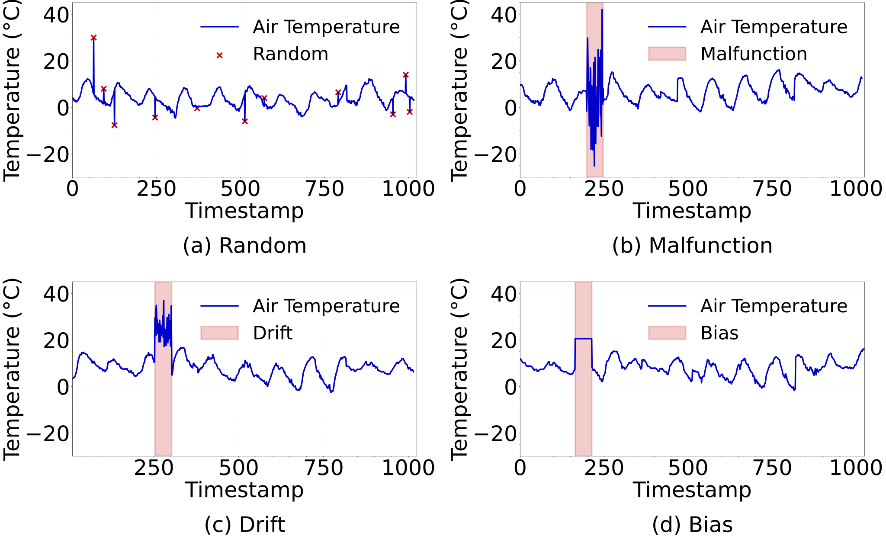
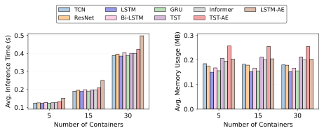
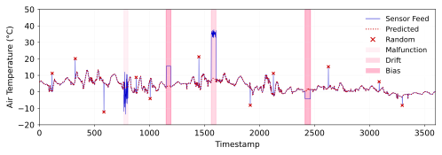

School of EECS, Washington State University, Pullman, USA
Our paper has been accepted to
SIGSPATIAL '25 (November 3–6, 2025, Minneapolis, MN, USA)!
T. Ahmed and M. Hasan,
"Weather-driven agricultural decision-making under imperfect conditions,"
in Proc. of ACM International Conference on Advances in Geographic Information Systems (SIGSPATIAL),
pp. 1–4, Nov. 2025.
[PDF]
[Extended Version]
@inproceedings{ahmed2025cerealia,
author = {Tamim Ahmed and Monowar Hasan},
title = {Weather-Driven Agricultural Decision-Making Using Digital Twins Under Imperfect Conditions},
booktitle = {Proceedings of the 33rd ACM International Conference on Advances in Geographic Information Systems (SIGSPATIAL '25)},
year = {2025},
pages = {1--4},
address = {Minneapolis, MN, USA},
publisher = {ACM},
isbn = {979-8-4007-2086-4/2025/11},
doi = {10.1145/3748636.3764158}
}
Background
Modern agriculture relies on precise weather data to optimize irrigation, frost protection, and pest control.
However, real-world weather networks often suffer from sensor faults, calibration drift, or communication errors.
These inconsistencies can lead to poor predictions and crop losses.
High-level schematic of this work. CEREALIA stores historical weather traces and simulated anomalous
data that is used to detect runtime inconsistent data generated by the remote weather stations deployed in
the field. The end users can use CEREALIA to analyze how inconsistent data impacts the target agriculture
decision-making process.
Our Framework: CEREALIA
We introduce CEREALIA – a modular digital twin platform that detects, analyzes, and mitigates inconsistencies in agricultural weather data.
CEREALIA mirrors field weather stations in real time, classifies inconsistencies using neural models,
and supports resilient decision-making when perfect data is unavailable.
Workflow of CEREALIA. We make CEREALIA modular that allows designers to integrate various noisy
data that can be used with historical weather traces to train machine learning model(s). A runtime consistency
checker module uses a trained model to check for imperfect measurements and their impact on targeted
decision-making applications (for instance, fruit heat/frost prediction).
Key Contributions
Designed a modular digital twin system that integrates with live and historical weather feeds.
Evaluated nine state-of-the-art neural network models for anomaly detection in weather data.
Demonstrated real-world deployment in a Washington State orchard using NVIDIA Jetson Orin.
Conducted two case studies: weather data imputation and fruit surface temperature prediction with CEREALIA.
Real-world deployment of CEREALIA on an NVIDIA Jetson Agx Orin and connected to a live weather station located in Quincy, Washington. The setup streams live sensor data to the digital twin for anomaly detection, imputing missing or faulty values, and decision-support inference.
Inconsistency Generation in CEREALIA
To realistically study imperfect weather data, CEREALIA includes a
noise generator module that emulates sensor faults.
This allows us to inject anomalies into otherwise clean data and observe
how inconsistency affects decision-making models.

Visualization of four types of inconsistencies in air temperature readings:
(a) Random, (b) Malfunction, (c) Drift, and (d) Bias.
We consider the following four types of inconsistencies:
Random: unpredictable spikes in measurements,
\( X_{\text{random}}(t) = X(t) \times (1 + \eta_d) \),
where \( \eta_d \) is drawn randomly with probability \( d \).
Drift: gradual deviation from the true value,
\( X_{\text{drift}}(t) = X(t) + \delta + \epsilon \),
with offset \( \delta = X(t_0)\times\text{intensity} \).
Bias: consistent scaling across readings,
\( X_{\text{bias}}(t) = \mu \cdot \alpha \),
where \( \mu \) is the mean over a window and \( \alpha \) is a bias factor.
These generators mimic common real-world sensor faults such as random spikes,
faulty oscillations, long-term drifts, and constant offsets. Incorporating them
allows CEREALIA to test robustness of anomaly detection and
decision-support models under imperfect weather data.
Machine Learning Models for Inconsistency Detection
To classify inconsistent weather measurements, CEREALIA leverages a diverse set of
nine state-of-the-art neural network models. These models capture both
short-term patterns and long-term temporal dependencies in weather data.
CNN Models: Temporal Convolutional Network (TCN) and ResNet –
effective for extracting hierarchical features from time-series data.
RNN Models: LSTM, Bi-LSTM, and GRU – designed to learn sequential
dependencies across weather measurements.
Transformer Models: Time-Series Transformer (TST) and Informer –
capture long-range relationships using self-attention mechanisms.
Hybrid Models: TST-AE and LSTM-AE – autoencoder architectures that
combine sequence learning with feature reconstruction.
Together, these models allow CEREALIA to detect and classify anomalies such as
random noise, sensor malfunctions, drifts, and biases with high accuracy while operating
efficiently on embedded hardware.
Results Summary
We evaluated CEREALIA with nine machine learning models across multiple weather datasets.
The key findings are:
High Detection Accuracy: Most models reliably detected inconsistencies,
with bias and drift faults being the easiest to classify.
Model Variability: CNN and RNN models (ResNet, LSTM) showed the most
consistent performance across all noise types, while hybrid autoencoders sometimes
struggled with rare fault patterns.
Lightweight Operation: Inference is fast (under 1 second) and memory usage
is minimal (less than 0.4 MB per instance), making CEREALIA deployable on
embedded devices like NVIDIA Jetson Orin.

Performance of Cerealia with multiple instances. The plots show average inference time (left) and
average memory usage (right) for the Quincy network with varying container configurations. Even with 30
instances of Cerealia running concurrently, we can get inference results in less than a second and no more
than 0.4 MB of memory consumption.
Scalability: Even when running 30 parallel instances, CEREALIA
maintained low overhead and near real-time performance.
These results show that CEREALIA can robustly detect anomalies in weather data
and support agricultural decision-making even under imperfect measurement conditions.
Case Studies
1. Weather Data Imputation
Weather stations often produce missing or faulty measurements due to sensor malfunctions
or network outages. Such gaps can interrupt decision-making tasks like irrigation scheduling
or fruit stress prediction.
CEREALIA addresses this issue using a generative recurrent model (C-RNN-GAN)
trained on historical traces and noisy samples. The model can accurately predict missing values
across key attributes (temperature, humidity, pressure, wind), ensuring uninterrupted data streams.

Figure 7: Example of CEREALIA imputing air temperature values when real-time sensor feeds
are imperfect. Red shaded regions denote inconsistent inputs, replaced by predicted values.
2. Fruit Surface Temperature Prediction
Heat stress is a major concern for fruit growers, as excessive surface temperature can
cause sunburn and quality loss. Accurate, consistent weather inputs are required for
triggering protective measures such as cooling, fogging, or netting.
However, faulty sensor data can reduce prediction reliability.
CEREALIA uses the same set of nine neural models (CNN, RNN, Transformer,
and hybrid autoencoders) to predict fruit surface temperature from weather
attributes such as canopy air temperature, wind speed, dew point, and solar radiation.
When imperfect measurements were introduced, prediction errors increased significantly.
With CEREALIA imputing inconsistencies, performance improved and approached
the no-fault baseline.
Models
No Imperfection
Imperfect Measurements
Imputing Inconsistencies
MAE
RMSE
R²
MAE
RMSE
R²
MAE
RMSE
R²
TCN
0.6874
1.2911
0.9288
1.9347
4.9019
0.2634
0.7652
1.3466
0.9226
ResNet
0.5823
1.2395
0.9344
2.1711
5.4140
0.1014
0.6695
1.3038
0.9274
LSTM
0.8335
1.3969
0.9167
1.9208
4.1776
0.4650
0.9215
1.4688
0.9079
Bi-LSTM
1.0283
1.5890
0.8922
1.9139
3.8689
0.5411
1.0959
1.6467
0.8842
GRU
1.7242
2.1495
0.8027
2.3225
3.8069
0.5557
1.8041
2.2292
0.7879
TST
0.8128
1.3729
0.9195
2.4770
5.3600
0.1193
0.9348
1.8015
0.8615
Informer
0.5983
1.2530
0.9330
2.2968
5.3474
0.1234
0.6769
1.3122
0.9265
TST-AE
1.5949
1.9784
0.8329
2.3072
3.5205
0.6201
1.6834
2.0721
0.8167
LSTM-AE
0.9393
1.4239
0.9134
1.7415
3.4767
0.6295
1.0146
1.4949
0.9046
The results demonstrate that when faulty weather feeds are used directly, surface temperature
prediction errors nearly double. With CEREALIA imputing inconsistencies, accuracy
improves substantially, approaching the performance of perfect sensor data.
This highlights CEREALIA’s role in enabling reliable crop protection strategies
under imperfect weather conditions.
CEREALIA bridges computing and agriculture, enabling more resilient, data-driven decision processes.
By leveraging digital twins, we show how imperfect measurements can still lead to reliable farm management outcomes.